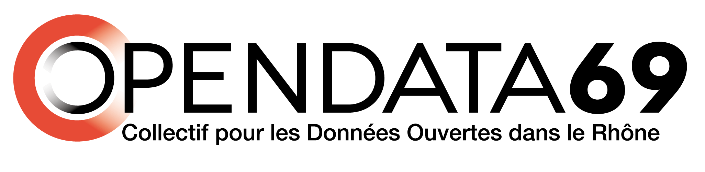

Your browser doesn't support the features required by impress.js, so you are presented with a simplified version of this presentation.
For the best experience please use the latest Chrome, Safari or Firefox browser.
Les données ouvertes
Speed Meeting Numérique ENE/CCI
6 juin 2013

"Une donnée ouverte est une information, publique ou privée, brute et qui a vocation à être librement accessible et réutilisable."
- - Budgets publics
- - Géographie
- - Pollution
- - Circulation / transport
- - Santé publique
(...et la liste est longue)
- - Fichiers informatiques
- - Formats standards
- - Données classées
et à jour
- - Données gratuites!
- - L'Etat
- - Les collectivités
- - Les entreprises
- - Les citoyens
- - Culture
- - Coûts
- - Méthodes
- - Blocage humain
- - Peur de l'échec
- - Applications
- - Mashups
- - Marketing
- - Services aux citoyens
- - Utilisation interne
- - Optimisation du dernier km
- - Assistant de déplacement
- - Suivi des dépenses collectives